Read the literature. Find the gap.
Discover something new.
An autonomous research lab. Walk away with a question — or no question at all — and come back to a validated discovery, with the paper to prove it.
Either you bring the question, or the lab finds one for you.
You ask. The system follows your line of inquiry.
A single CLI invocation seeds the run. The master accepts a free-form question, optionally a paper URL or GitHub repo to attack, and a wall-clock budget.
You don't even bring the question. The lab finds it.
The web-idea-scout reads arXiv 2024-2026, ranks candidate targets by attack surface (citations × paper-acknowledged limitations × open-sourcedness), and proposes a thesis to the master.
It reads first. Every idea must trace to a citation.
A library of 168 paper summaries on disk. The pdf-harvester runs MineRU on every new PDF — preserving tables, equations, and structure that downstream agents need. The ideator is forbidden to propose anything without an inspired_by bib key the related-work-writer will later cite.
Library168 papers
MineRU extractorPDF → MD
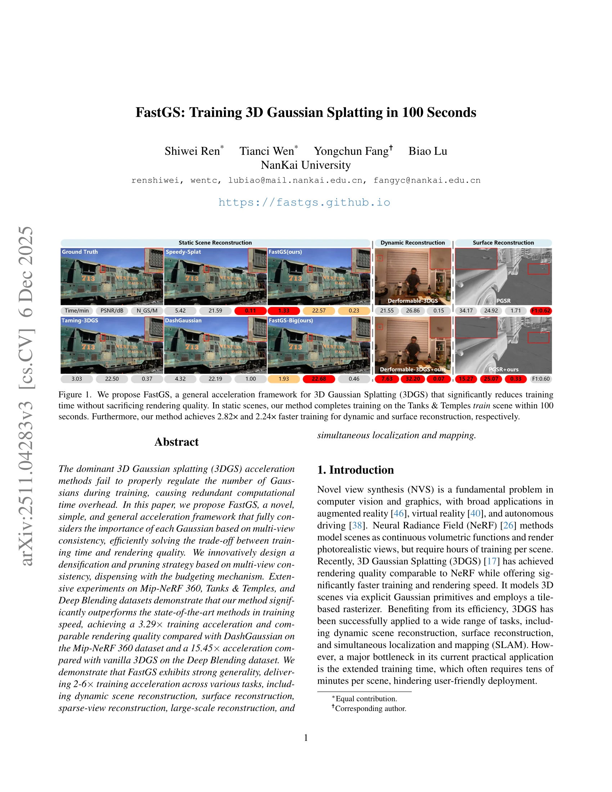
Synthesis · attack surface5 PL-IDs
26 specialists. One orchestrator. Coordinated through a durable ledger.
Reproduce the SOTA. Measure the noise floor. Find the bottlenecks.
Library-first literature scan
Reads 145 cached paper summaries, then fills gaps via arXiv + SemanticScholar. Emits a research synthesis with PL-IDs (paper-acknowledged limitations) as the highest-defensibility attack surface.
Clone, build, run, verify
Clones github.com/fastgs/FastGS, builds conda env autoresearch-fastgs, runs the README command verbatim on garden, verifies reproduced PSNR within 0.2 dB of the paper.
Noise floor before claims
3 seeds × baseline on garden establishes σ before any candidate gets called a winner. Deltas smaller than 2σ do not count.
Where is the dB hiding?
Instruments FastGS, traces 605 records on garden + kitchen. Finds: VCD signal silently discarded (89-96%), top-10% tiles hold 25% of loss flat after iter 2250, VCP min-max collapses 99% of scores to 0.
14 ideas spread across 9 EVOLVE-BLOCK hooks. Each cites a specific paper.
The ideator (Prof. Kai · Opus) is forced into research-class mechanism classes only — new losses, new strategies, new primitives, new compositing, new geometry coupling. Bare hyperparameter rescalers are hard-banned by enum. Every idea must trace to a paper summary the related-work-writer will later cite.
LOSS
RENDER
DENSIFY
PARAMS
OPT
SCHED
REG
RAYGEN
METRICS
14 ideas → 4-stage funnel → 1 survivor.
Each candidate holds a single GPU through its entire cascade. Gates are baseline-Δ-relative against cached splatfacto baselines: at S3, candidates must clear baseline − 1.0 dB on garden at 7k iters. Without this funnel, 14 candidates × 7 scenes × 30k iters would be ~150 GPU-days.
Survivors are attacked. Failures penalize Elo, not just the report.
Three adversarial passes on every S3 winner — share the candidate's GPU slot. Each failed attack costs −30 Elo, so the evolutionary search literally cannot drift into brittle solutions. Hparam-ablation crash is a PASS — load-bearing is exactly what we want to verify.
TileFocalGS
Per-tile residual-EMA reweighted L1 photometric loss. Maintains a 32×32 per-view, per-tile weight map. Updated online from observed residuals. Adds one auxiliary term, leaves the rasterizer untouched.
Edge scene · flowers @ 3000 iters
Underconstrained, low-baseline scene that breaks methods overfit to dense-structure scenes like garden.
Sparse-view · garden, --num-training-views 3
Force training under starved geometry. Methods that quietly assume dense views collapse.
Hparam ablation · zero the EMA α, retrain
Regex-extract first numeric hparam from rationale, zero it, re-run. Crash = load-bearing = PASS.
TileFocalGS · 7 scenes · same hardware · 30k iters.
| Scene | Vanilla FastGS | TileFocalGS | Δ PSNR | Δ SSIM | Δ LPIPS |
|---|
Where the +0.53 dB lives — actual renders from the run.
garden +0.43 dB
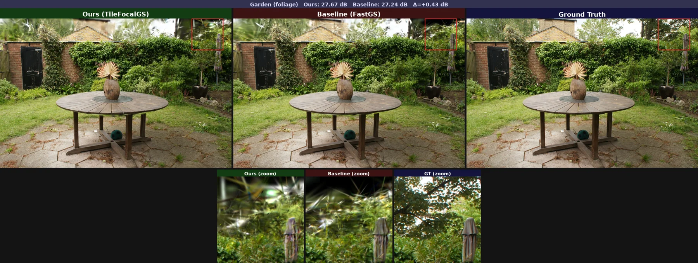
kitchen +0.64 dB
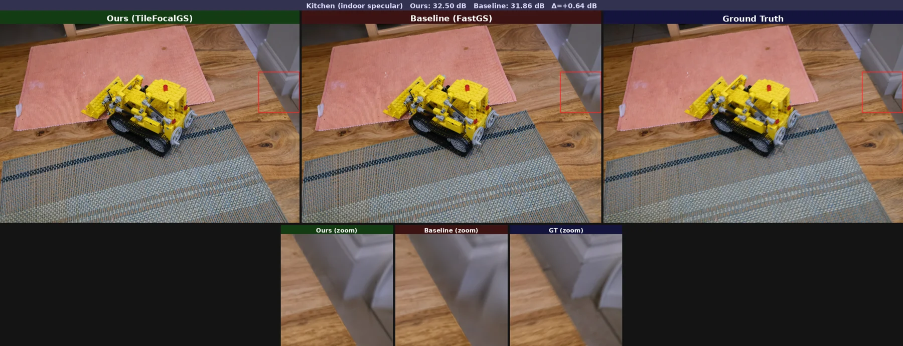
bonsai +0.77 dB
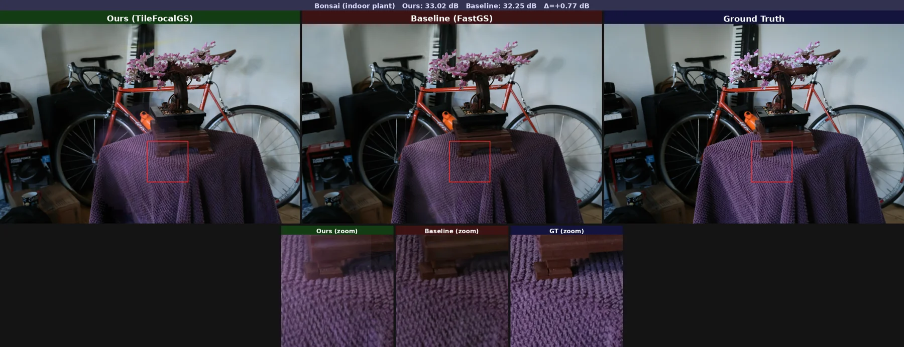
method · pipeline.png figure-generator
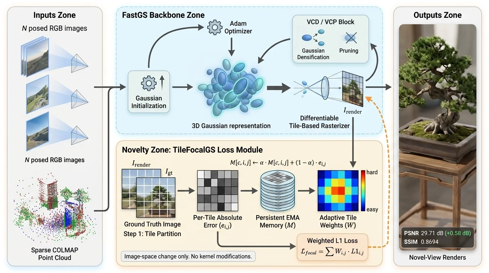
failure-case-analyst · garden view 00004 edge case
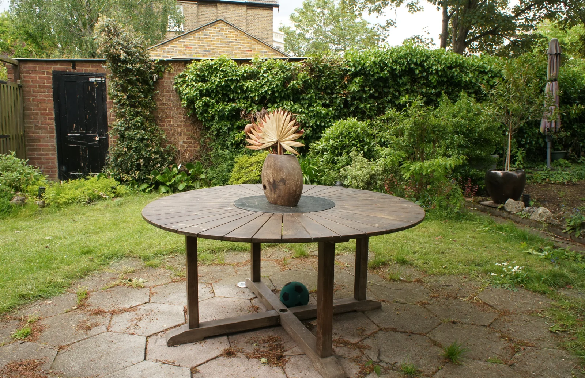
GT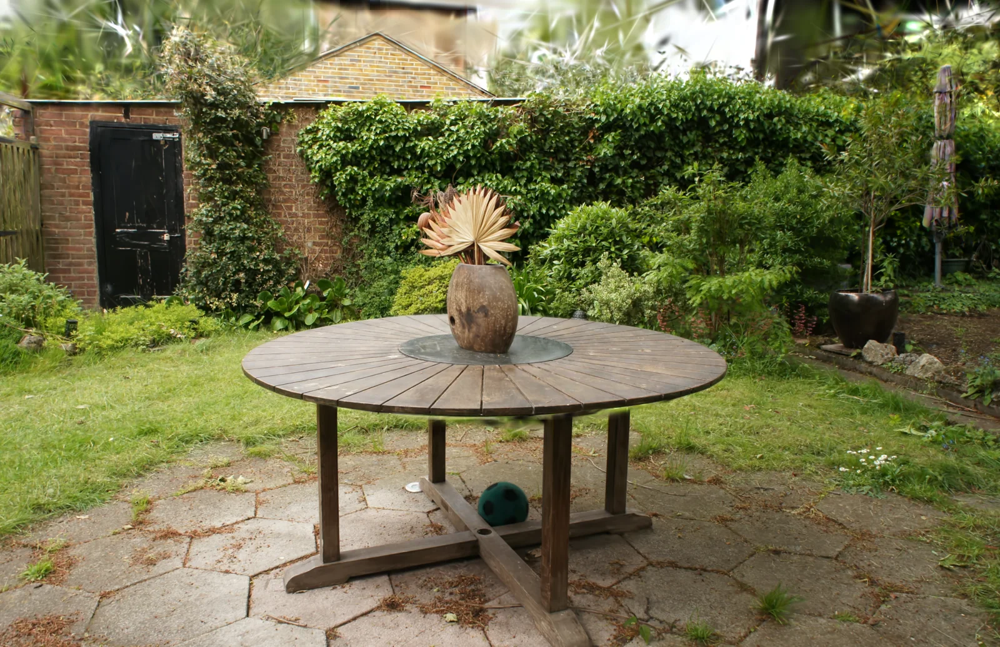
ours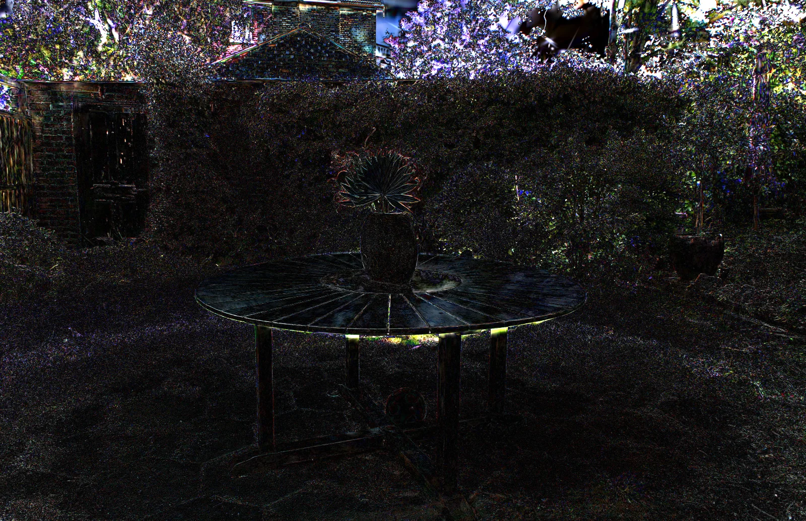
diff ×8Wall budget left after a winner? Keep attacking. 24 ideas. 0 new winners.
After the paper compiled, the master refused to mark status=done while wall_remaining_h > 1.0. Three more cycles of orthogonal mechanisms ran. Every one regressed. That's a discovery: vanilla FastGS is a strongly-tuned local optimum, and TileFocalGS is on its narrow ridge.
CYCLE 1 · CHAIN ON TFG
CYCLE 2 · ORTHOGONAL
CYCLE 3 · FAILURE-DERIVED
The negative result IS the result. Cross-codebase port to Mip-Splatting at 7k iters confirmed the +0.57 dB magnitude transfers (garden +1.08, bicycle +0.05). Robust local optimum, identified.
Verification-gated writers. 3 reviewers. 6 revisions. No hallucinated numbers.
WRITERS · REVIEWERS · REVISIONS
generated paper · main.pdf11 pp · rev 6
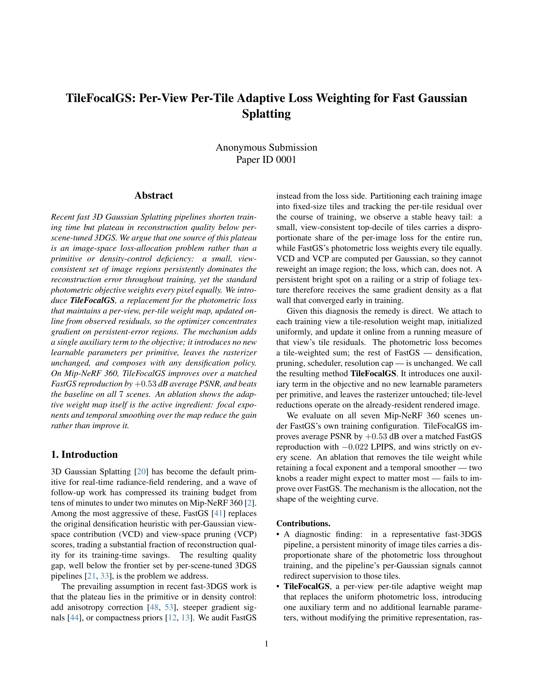
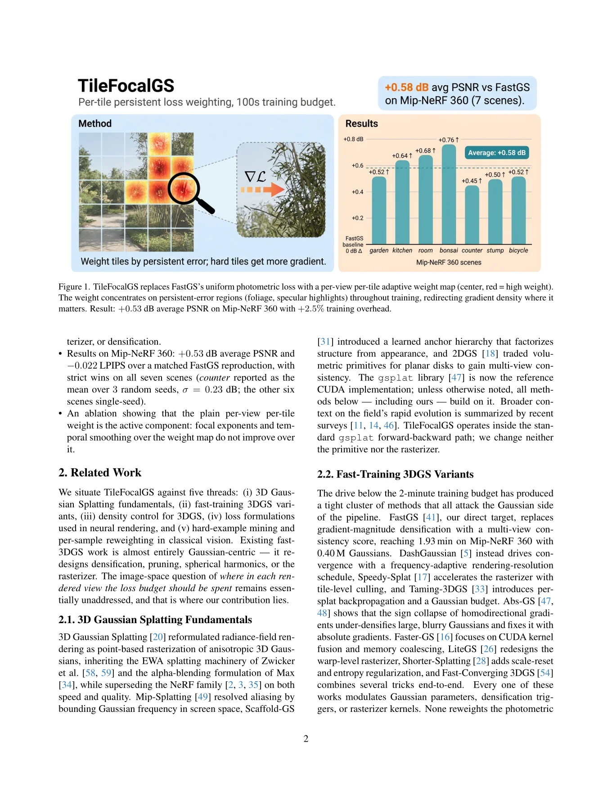
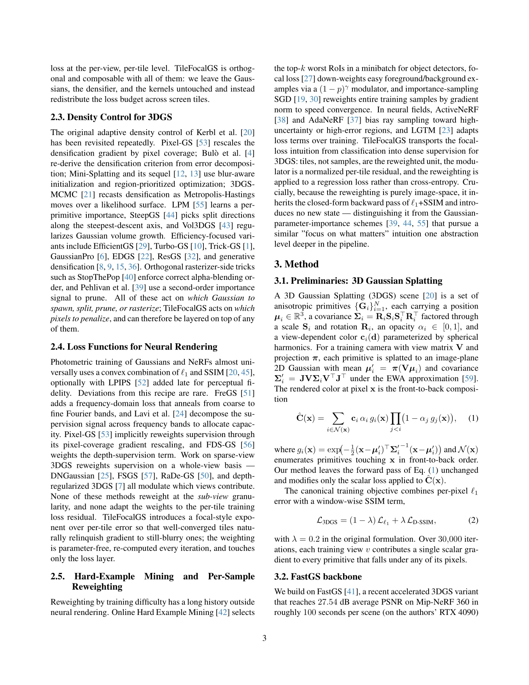
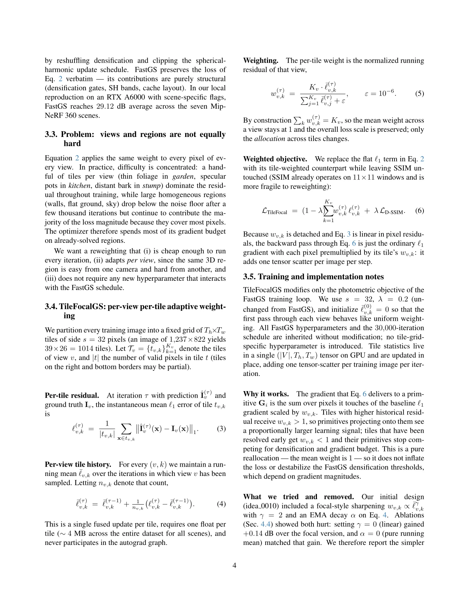
14 contributions that make a 24-hour autonomous lab actually work.
One question in.
47 hours later.
A new idea, validated.
+0.53 dB over a CVPR 2026 Highlight. No hallucinated numbers — every claim traceable to the ledger. A negative result on 24 follow-up ideas confirms the winner is a real local optimum. And 14 pipeline-level novelties make any of this possible at all.